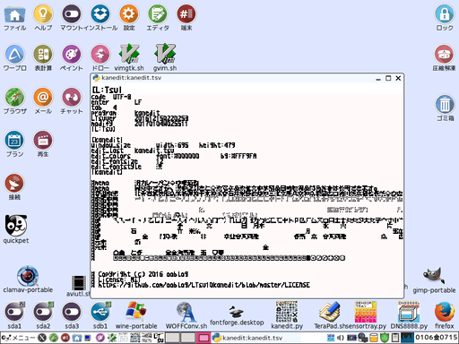

「kanedit」は「LTsv10kanedit(tsvtool10)」を用いた漢直テキストエディタの予定です。
version(branch):20170119R141608 modify:20170120F170856
version(branch):20170119R141608 modify:20170120F170856
※「MIT License」準拠。
※口語的説明。
・「LICENSE」も含めソースコードの閲覧やコピーに制限を設けない事。
・いかなる場合においても作者または著作権者は一切責任を負わない事。
※「kanedit」固有の問題への言及。
・単漢字辞書「LTsv/kanchar.tsv」汎用辞書「kanword.tsv」などで翻訳ミスもしくは言い回しが古くなるなど日本語(英語中国語なども含む)の不具合に対しても作者または著作権者にはメンテナンス義務等はありません。
※Pythonは別途インストールされているものとします(Pythonの導入分からない人は「⑩-0．「L:Tsv」のＦＡＱ」も参考)。
ダウンロードは「https://github.com/ooblog/LTsv10kanedit」にある「Clone or download」ボタンを押すと出る「Download ZIP」メニューをクリック。
インストールは任意(なるだけユーザーディレクトリ内)のフォルダに「LTsv10kanedit-master.zip」を解凍するだけです(「LTsv10kanedit-master」フォルダが作成されるはずです)。
「*.py」のパーミッションがOFFになってたら実行可能に変更、Wineで使う場合は「wine_sh」フォルダ内の「*.sh」のWineパスを適宜修正。
最初に「kanmap.py」を起動(前バージョンの「LTsv/kanpickle.bin」ある場合は一旦削除してから)。「LTsv/kanpickle.bin」を新規作成してください。
「LTsv/kanpickle.bin」を初期化しない場合グリフ座標データが蓄積するまで起動や動作が重くなるか、バージョン(ブランチ)によってはエラーになる場合があります。
詳細は「 ①-0．「kanmap」の使い方(初回起動・表示編)」を参考。
①-0．「kanmap」の使い方(初回起動・表示編)」を参考。
フォント「kan5x5comic.ttf」も用意する場合は「 ③-0．「kanfont」のＦＡＱ」を参考。
③-0．「kanfont」のＦＡＱ」を参考。
アンインストールはインストール時に作成した「LTsv10kanedit-master」フォルダを削除するだけです。
Python 2.7.6(Tahrpup6.0.5)およびPython3.4.4(Wine1.7.18)で開発しています。Windows,cygwin,darwinなどでの動作は確認しておりません。
フォント(グリフ)「kan5x5comic」は半角と全角の幅の比率が約5:3(1024:624)なのでアスキーアートで問題になる場合があります。グリフ不足で表示できない文字などあります。
「kan5x5comic.ttf」と「kan5x5.ttf」を同時に入れると麻雀牌が表示されない(「kan5x5.ttf」の絵文字代替4x5文字が優先される)場合があります。
私用領域と呼ばれる環境に左右される文字コードを漢直鍵盤の制御に用いてます。「kan5x5comic.ttf」を用意しないとソースが見辛い可能性があります。
人名に使える漢字の異体字を漢字配列「LTsv/kanmap.tsv」から単漢字辞書「LTsv/kanchar.tsv」に移管作業中。なので漢直鍵盤の漢字配列「LTsv/kanmap.tsv」が大幅に変更するかも。
マウスボタンの取得は保留。ホイールの取得は放置。tkk方面は手を出さない予定(コンボボックスなどはGTKのみサポート)。
GTKのコールバックから受けとる構造体を扱う方法が不明のため、GUIイベント経由のPCキーボード取得やファイルダイアログからのキャンセル取得などが不明。
「docs/」フォルダ内のドキュメントを「docs/kanedit_etc.tsv」ベースで描き直し中。執筆途中状態の関数一覧タグ解説項目あり。
「LTsv/LTsv_doc.py」でタグの順序が厳格という問題があるのでいっその事スクリプト言語ごと新規に作ろうと思います(TSFの開発)。
LTsv版の「kanedit.py」の開発を凍結してTSF版の「kanedit」を作成する予定です。言語の開発には時間が必要なので、平行してVim版「LTsv/kanedit.vim」も開発です。
「LTsv/kanedit.vim」と「kanedit.py」とで操作方法が乖離してますがTSF版もVim版の方向になるべく揃える予定です。LTsv版は互換性の維持程度に止まると思います。
TSF版作る前に漢字配列「LTsv/kanmap.tsv」のグリフ圧縮アルゴリズムを「5x10x」から「5x10x20x」に変更したいので、移行ツール作成→一時的に無圧縮→新アルゴリズムのグリフと交換などの間多少の混乱が発生するかと思います。

漢直鍵盤の入力操作は「⑨-2．漢直鍵盤の操作方法」を参考。
テキスト入力欄(電卓)の入力操作は「⑨-3．テキスト入力欄(電卓)の操作方法」を参考。
ここでは「kanedit」に追加された(予定含む)操作の説明になります。
漢直の詳細は「③-1．漢直(漢字直接入力)の解説・相席の基本概念と一ヶ所系相席」を参考。
「kanedit.py」の解説は準備中です。
「kanedit.tsv」の解説も準備中です。
更新情報はGitHubやブログを確認してください。